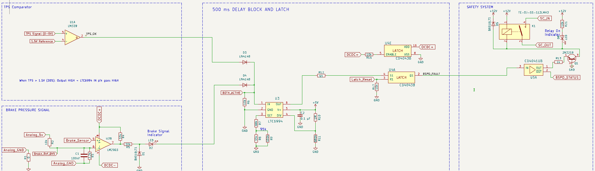
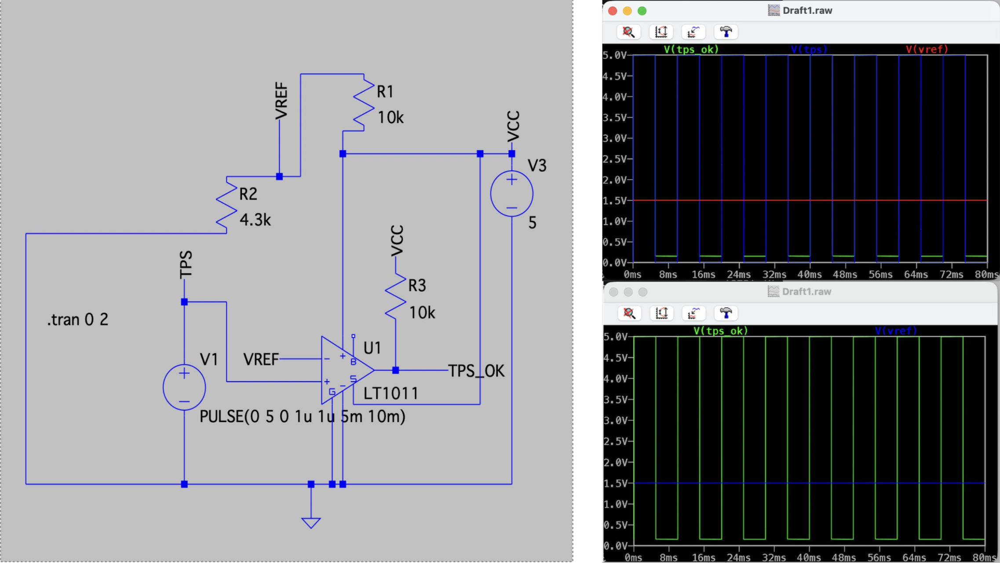
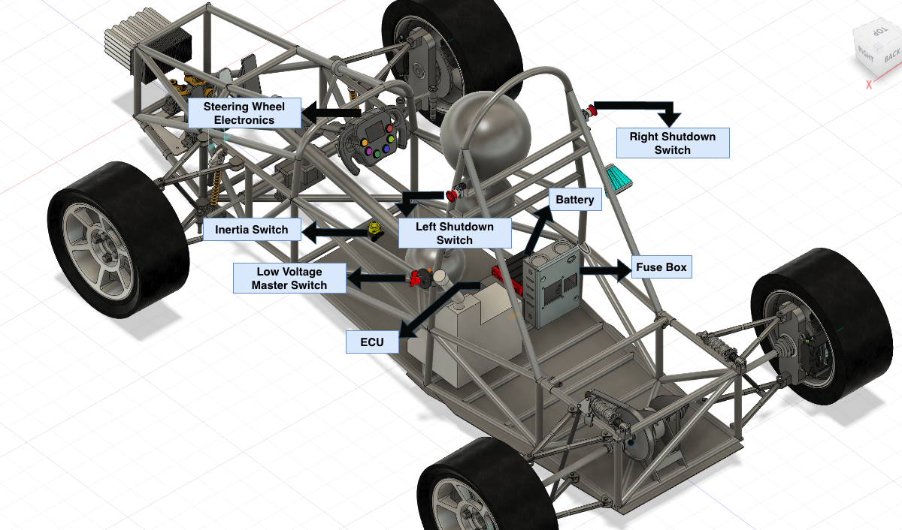

Formula Student 2026

System Architecture Block Diagram

BSPD Circuit Schematic

TPS Comparator Subcircuit - LTspice Simulation

CAD Layout
Vehicle Electronics Subsystem
Team
The electronics subsystem covered sensing, safety enforcement, peripheral control, and telemetry for the vehicle. The architecture was split into four independent domains: a standalone Brake System Plausibility Device (BSPD), a Vehicle Control Unit (VCU), a steering wheel interface, and the stock Honda CBR600F4i ECU retained without modification.
Electronic Throttle Control was removed in favour of a mechanical throttle, reducing regulatory complexity under T11.9 for a Concept Class entry. The BSPD used LM339 comparators and a CD4538B monostable timer, with the throttle threshold set at 30% above idle, providing a 5% margin above the T11.6.1 minimum. LTspice simulations confirmed compliant switching behaviour.
The VCU on an Arduino Mega 2560 handled sensor acquisition across nine channels, SD card logging, cooling and fuel flow control, and a 15ms ignition cut for clutchless paddle shifting. A dedicated ESP32 drove the steering wheel display and relayed paddle inputs to the VCU over UART serial.
Power was supplied by an Odyssey PC680 12V AGM battery through a 30A fuse and LVMS, with component placement following T11 regulatory constraints.
Skills
- Circuit Design
- LTspice Simulation
- Arduino/ESP32 Firmware
- UART Serial Communication
- Sensor Integration
- Safety Systems Design